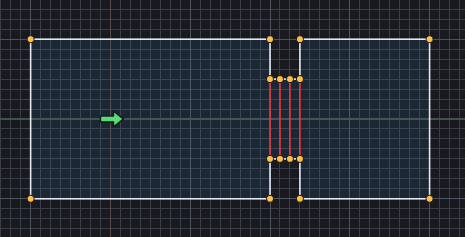
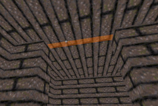
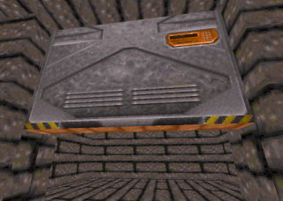
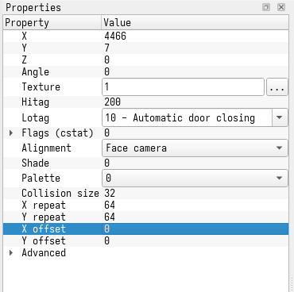
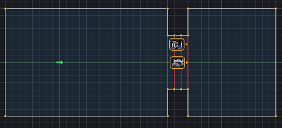

This mini tutorial explains how to build vertical doors (or "Doom Doors") in Duke Builder.
First draw two rooms that are connected by three sectors. The size of the rooms doesn't matter but the connection between them should be 2048 units long (8 squares on a 256 grid) and each sector should have a width of 256 (or one grid).

Now enter 3D mode with q and select all ceiling surfaces by holding Shift and double-clicking one of them. You can now make the room bigger by scrolling up on the scroll wheel of your mouse.
Still in 3D mode, select the middle sector of the three passageway sectors.

Pull it down by scrolling down on the scroll wheel. Select the wall that just came down and press Ctrl + Right mouse button to change its texture. Choose texture 150.

Apply the same texture to the other side of the door by copying it with Ctrl + C, then select the other side of the door and press Ctrl + V.
Lower the door fully by right clicking it and selecting Snap Ceiling to Floor. You can always raise it again by right clicking it and selecting Select Sector Ceiling. This selects the surface at the underside of the door and you can then just pull it up with the mouse wheel.
Now go back to 2D mode by pressing Q. Then go to sector mode by pressing S and select the middle sector of the passageway. In the property editor on the left change the Lotag to 20 - Ceiling door.
Now start the game by pressing F9 and you should have a functional door that slides into the ceiling when you press E.
The door opens but you might have noticed that it never closes and that there is no typical door sound when it opens.
Let's fix this!
We need to add two sprites to the sector that represents the door.
First we add a sector effector sprite. Go to sprite mode by pressing T. Then right click on the door sector to create a new sprite and right click on this sprite to select texture number 1. Now go to the properties on the left side of the screen and set the Lotag to 10 - Automatic door closing and set the Hitag to 200 (this is the duration until the door closes).

Then create a second sprite in the door sector and set its texture to number 5 (MUSICANDSFX)

Change the Lotag of this sprite to 256 - Space door (fast, soft hydraulic).
Start the game again with F9. This time you should hear a door sound when the door opens and it should close after a short period of time.